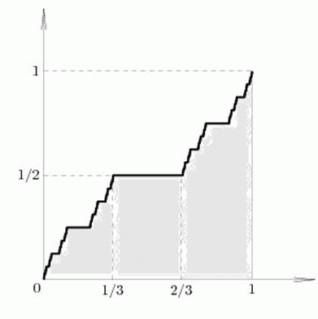

有这样一种函数，它的定义域和值域都是[0,1] （见下图）
当1/3 < x < 2/3时，f(x)=1/2
当x<1/3时，f(x)=f(3x)/2
当x>2/3时，f(x)=f(3x-2)/2 + 1/2
这个函数叫做康托函数(Cantor Function)，是一个优美而又神秘的图形。人们发现他看似一个连续的不下降函数，但是函数的任意切线都是水平的。
以你现在的数学水平，还不能很好地理解这个函数，所以你的任务并不难。
你的任务是求y=f(x)^n （n次方）与 x轴 和 直线x=1 围成的面积。
